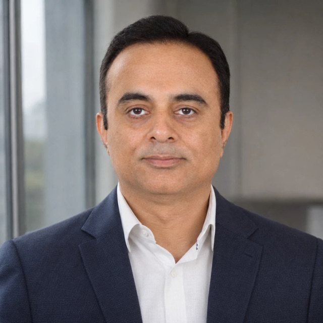

Corporate advisory
- Incorporation of companies and LLPs
- Statutory documentation and registers
- Filings with the Ministry of Corporate Affairs
Borrower-side debt arrangement · India
Loans of ₹5 crore and above, prepared the way a credit committee reads them and placed with the right lenders.
Free and confidential · We call you within one business day

The gap
A single relationship manager can rarely sanction a loan of this size alone. The file goes up the chain, and the promoter waits.
Investment banks and large syndication desks chase ₹500 crore and above. Below that, the work does not fit their model.
Thin CMA data, projections that jump, one lender at a time. The result is slow sanctions, smaller amounts and weaker terms.
What we do
Domestic bank and NBFC debt for Indian entities, from ₹5 crore upwards. Each mandate starts with your business and its cash flows, not with a product.
What we handleDetailed project report (DPR), projections (CMA data), lender shortlist, parallel placement, negotiation and documentation.
What we handleAssessment of limits, CMA data, consortium or multiple banking arrangements, and annual renewals.
What we handleBenchmark review, takeover by a better-priced lender, and prepayment negotiation.
What we handlePromoter funding, loan against property, lease rental discounting and mezzanine finance.
What we handleRestructuring or one-time settlement with existing lenders.
Alongside debt arrangement, we support promoters and overseas businesses with corporate, tax, regulatory and transaction work.
Where a matter requires a licensed professional, such as a registered valuer, practising company secretary, advocate or patent agent, we will tell you and work with the professional you appoint.
How a mandate runs
A typical timeline from first meeting to disbursement. Timelines vary from lender to lender.
Week 1
An honest view of what is fundable, at what size and on what terms.
Weeks 2–4
You share data, management projections, plans and other information we need.
Weeks 5–8
CMA data, projections, detailed project report, information memorandum and security plan.
Weeks 9–11
Three to five lenders receive the file at once. We handle every query.
Weeks 11–18
The lenders run their own appraisal, including techno-economic viability (TEV) studies, valuation and legal assessments.
Weeks 19–20
Offers compared on one page: rate, benchmark, reset, fees and covenants.
Weeks 21–24
Sanction, documentation and conditions precedent through to disbursement.
What every file includes
Business, promoters, group structure, purpose of the loan, and sources and uses.
Five years in the lender’s format, with DSCR, interest cover and sensitivity cases.
Primary and collateral security, title status, existing charges and proposed cover.
Every facility, lender, rate, benchmark, reset date, credit rating and repayment profile.
Entity documents, promoter KYC, GST and tax filings, and statutory dues.
Two pages: why we think it is fundable, the risks we see and how we would mitigate them.
Built on audited financials or information as represented by management. We do not audit or verify it.
Lenders decide. Each bank or NBFC makes its own decisions on approval, terms and timing. We work on a best-efforts mandate and do not guarantee approval, pricing or timelines.
How we are paid
Our fee depends on the industry and sector, the creditworthiness of the promoter and the company, and the complexity of the transaction. It is a mutually agreed percentage of the total debt to be raised.
Working with us
Companies
A bank-grade file, lenders approached in parallel, every offer compared on one page, and one team chasing it to disbursement.
Lenders
Pre-assessed files in your CMA format with our credit note, quick answers to queries, and full disclosure of who else has the file.
One rule runs through it all: we are paid by the borrower alone, so our advice and our introductions stay clean.
See what your business can raise.
Get your free fundability view →Why AK Advisors

Partner
Over 40 years in finance. For 27 years he was Chief Financial Officer of an India-focused private equity fund adviser, leading diligence, investment structuring, documentation and closing on 30 investments, and overseeing exits through IPOs, buybacks, secondary and strategic sales. He has led investment restructurings and turnarounds, including restructuring the management, debt facilities and operations of an industrial park into a profitable business. Earlier, he ran operations, finance and compliance at an NBFC. B.Com, LLB and Associate Member of the Institute of Cost and Management Accountants of India.
Partner
Deal advisory at KPMG India and EY-Parthenon. MSc in Banking and Finance, King’s College London. Certified Financial Modeling & Valuation Analyst (FMVA). Has worked on transactions across a wide range of industries and sectors.
Anurag Kumar’s track record before AK Advisors
Sector experienceTelecom · Ports and logistics · Infrastructure and construction · Defence · Apparel · Pharmaceuticals · Printing and publishing · Financial services
Qualified and highly experienced chartered accountant, lawyer, cost accountant and finance professional. No part of the file is outsourced.
Working relationships across public sector banks, private banks and NBFCs. Files go to people, not portals.
Mandates in brief
Capex and term loan
Refinance
Client names withheld. Some details have been changed to protect confidentiality.
Independent arranger only: we do not lend, handle client funds, or provide financial advisory beyond the mandate. Lenders make their own credit decisions.
Talk to us directly.
Request a confidential callback →For borrowers
Benchmarks lenders price against, calculators to test a financing case, and the documents a lender will ask for.
Last reviewed 23 November 2026. Sources: RBI, SBI.
These figures were last reviewed days ago and may be out of date. Check the linked sources for current rates.
Two-minute check
Four questions, an indicative read of where your loan usually fits and what lenders will look at first. Nothing is sent until you ask us to call.
Indicative only, based on general lending practice. It is not an assessment of your company, and lenders make their own decisions.
Questions
Straight answers to what borrowers usually ask first.
You do. We act only for the borrower and are paid under a mandate agreed with you in writing before work starts. We do not take fees or commissions from lenders, so our advice and introductions stay clean.
Our fee is a mutually agreed percentage of the total debt to be raised, based on the industry and sector, the creditworthiness of the promoter and the company, and the complexity of the transaction. It is paid in three tranches: 25% on signing the mandate (non-refundable), 50% on sanction and 25% within 90 days of sanction, with GST as applicable.
Loans of ₹5 crore and above for Indian entities, from domestic banks and NBFCs.
A typical mandate runs about 24 weeks from first meeting to disbursement, in seven steps. Timelines vary from lender to lender, and lenders set their own pace for appraisal and sanction.
No. We work on a best-efforts mandate, and each bank or NBFC makes its own decisions on approval, terms and timing. What we control is the quality of your file, the choice of lenders and how offers are compared and negotiated.
Public sector banks, private banks and NBFCs that suit your requirement, where we have working relationships. We agree the list with you first, and no lender receives your information without your approval.
Only your funding objective, an indicative amount and your timing, through a callback request. We then sign an NDA, send a document checklist and a secure link for your last three years of financials and, within a week, share a one-page view of what is fundable, at no charge.
About two to three hours a week from your CFO or finance lead. You get a document checklist on day one, and we do the drafting, modelling and lender follow-up ourselves.
No. We also handle working capital limits, refinancing and rate resets, NBFC and structured debt, and debt resolution through restructuring or one-time settlement with existing lenders.
Next step
Request a confidential callback. We sign an NDA, then send you a secure link for your last three years of financials and, within a week of receiving them, share a one-page view: fundable amount and key ratios, likely pricing range, suitable lenders and what would strengthen the file. No charge.
What the one-page view covers (sample, illustrative figures)
Lenders: share your current appetite by sector and ticket size, and a named contact for our files, at queries@akadvisors.in.
Please do not attach documents to this form or send them by email. After your callback, we will share a secure upload link for your financials. We never ask for banking passwords or card details.
Include the following in your email and we will be in touch: